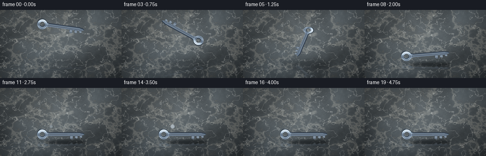
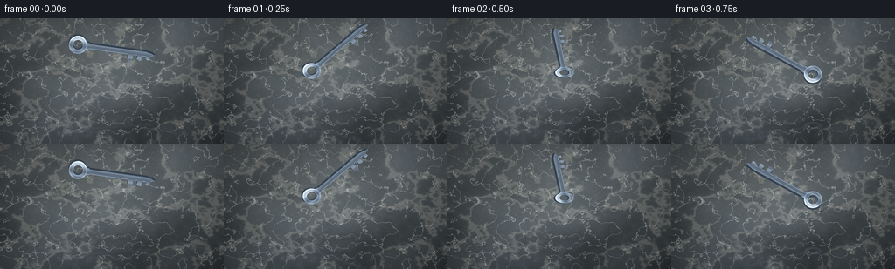
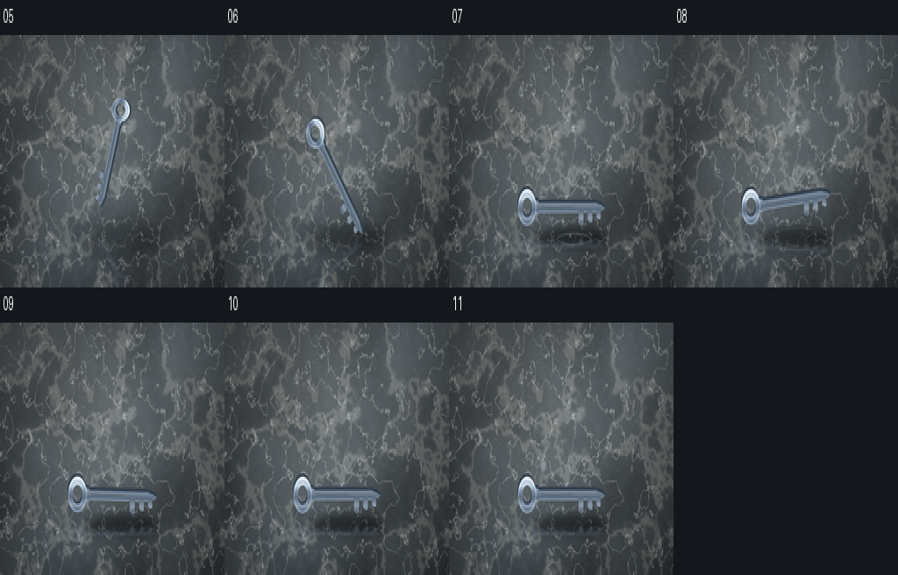

CODING AGENTS AS PIXEL WORLD MODELS
traex/DeepSeek-V4.1-Flash · material_0014
点击播放 · 原生 RGB 像素
逐轮保存的候选
回放视频、检查图与代码变化。
每份候选均可单独播放。实际图片检查记录在下方工具轨迹中。
候选 01播放与检查图
点击播放 · 原生 RGB 像素


展开代码变化
--- 上一保存版本
+++ 本次保存版本
@@ -0,0 +1,481 @@
+"""Procedurally generate a steel key falling onto polished marble."""
+
+from __future__ import annotations
+
+import math
+from pathlib import Path
+
+import numpy as np
+from PIL import Image, ImageDraw, ImageFilter
+
+import artifact_io
+
+
+WIDTH = 256
+HEIGHT = 144
+FRAMES = 20
+FPS = 4.0
+SCALE = 4
+RW = WIDTH * SCALE
+RH = HEIGHT * SCALE
+
+
+def fractal_noise(
+ rng: np.random.Generator,
+ width: int,
+ height: int,
+ base: tuple[int, int],
+ octaves: int,
+ persistence: float = 0.56,
+) -> np.ndarray:
+ field = np.zeros((height, width), dtype=np.float32)
+ amplitude = 1.0
+ total = 0.0
+ for octave in range(octaves):
+ bw = max(3, int(base[0] * (2**octave)))
+ bh = max(3, int(base[1] * (2**octave)))
+ small = rng.random((bh, bw), dtype=np.float32)
+ up = np.asarray(
+ Image.fromarray(small, mode="F").resize(
+ (width, height), Image.Resampling.BICUBIC
+ ),
+ dtype=np.float32,
+ )
+ field += amplitude * up
+ total += amplitude
+ amplitude *= persistence
+ field /= total
+ low, high = np.percentile(field, [1.0, 99.0])
+ return np.clip((field - low) / max(high - low, 1e-6), 0.0, 1.0)
+
+
+def shifted(array: np.ndarray, dy: int, dx: int = 0) -> np.ndarray:
+ out = np.zeros_like(array)
+ h, w = array.shape[:2]
+ ys = slice(max(dy, 0), min(h + dy, h))
+ yd = slice(max(-dy, 0), min(h - dy, h))
+ xs = slice(max(dx, 0), min(w + dx, w))
+ xd = slice(max(-dx, 0), min(w - dx, w))
+ out[yd, xd] = array[ys, xs]
+ return out
+
+
+def make_marble_floor() -> Image.Image:
+ rng = np.random.default_rng(1407)
+ yy, xx = np.mgrid[0:RH, 0:RW].astype(np.float32)
+ xn = xx / (RW - 1)
+ yn = yy / (RH - 1)
+
+ broad = fractal_noise(rng, RW, RH, (7, 5), 5, 0.60)
+ detail = fractal_noise(rng, RW, RH, (18, 11), 6, 0.52)
+ fine = fractal_noise(rng, RW, RH, (44, 26), 4, 0.50)
+
+ # A soft, cool stone base with a restrained overhead light pool.
+ light = (
+ 0.40
+ + 0.38 * np.exp(-(((xn - 0.48) / 0.56) ** 2 + ((yn - 0.31) / 0.63) ** 2))
+ + 0.08 * (1.0 - yn)
+ )
+ light = np.clip(light, 0.0, 1.0)
+ dark_stone = np.array([0.095, 0.125, 0.150], dtype=np.float32)
+ light_stone = np.array([0.350, 0.370, 0.375], dtype=np.float32)
+ rgb = dark_stone + (light_stone - dark_stone) * light[..., None]
+
+ cloud = (broad - 0.5)[..., None] * np.array([0.075, 0.083, 0.088], dtype=np.float32)
+ rgb += cloud
+
+ # Contour bands from the same warped field read as natural marble veins.
+ vein_broad = np.exp(-((broad - 0.52) / 0.070) ** 2)
+ vein_main = np.exp(-((detail - 0.515) / 0.018) ** 2)
+ vein_fine = np.exp(-((fine - 0.50) / 0.007) ** 2)
+ vein_alt = np.exp(-((broad - 0.695) / 0.012) ** 2)
+
+ ivory = np.array([0.815, 0.790, 0.725], dtype=np.float32)
+ pearl = np.array([0.925, 0.925, 0.895], dtype=np.float32)
+ bronze = np.array([0.525, 0.445, 0.335], dtype=np.float32)
+
+ rgb += (ivory - rgb) * (0.25 * vein_broad)[..., None]
+ rgb += (pearl - rgb) * (0.48 * vein_main)[..., None]
+ rgb += (pearl - rgb) * (0.20 * vein_fine)[..., None]
+ rgb += (bronze - rgb) * (0.15 * vein_alt)[..., None]
+
+ # Polished surface: one long specular sweep and a faint reflected sky band.
+ sweep_coord = (xn - 0.58) * 0.88 + (yn - 0.42) * 0.48
+ sweep = np.exp(-(sweep_coord / 0.22) ** 2)
+ sky_band = np.exp(-(((xn - 0.16) / 0.16) ** 2))
+ sheen = 0.095 * sweep + 0.025 * sky_band * (0.4 + 0.6 * (1.0 - yn))
+ rgb += sheen[..., None] * np.array([0.76, 0.87, 0.95], dtype=np.float32)
+
+ vignette = np.clip(
+ 1.0
+ - 0.34 * (((xn - 0.5) / 0.72) ** 2 + ((yn - 0.48) / 0.76) ** 2),
+ 0.62,
+ 1.0,
+ )
+ rgb *= vignette[..., None]
+
+ grain = rng.normal(0.0, 0.0045, (RH, RW, 1)).astype(np.float32)
+ rgb = np.clip(rgb + grain, 0.0, 1.0)
+ return Image.fromarray((rgb * 255.0 + 0.5).astype(np.uint8), "RGB")
+
+
+def make_key_sprite() -> Image.Image:
+ """Render a beveled steel key sprite with a thick lower edge."""
+ ss = 2
+ sw, sh = 960, 320
+ mask_img = Image.new("L", (sw, sh), 0)
+ draw = ImageDraw.Draw(mask_img)
+
+ ring_cx, ring_cy = 142, 160
+ draw.ellipse(
+ (ring_cx - 92, ring_cy - 92, ring_cx + 92, ring_cy + 92),
+ fill=255,
+ )
+ draw.ellipse(
+ (ring_cx - 47, ring_cy - 47, ring_cx + 47, ring_cy + 47),
+ fill=0,
+ )
+ draw.rounded_rectangle((188, 133, 855, 187), radius=25, fill=255)
+ draw.rounded_rectangle((214, 124, 262, 196), radius=16, fill=255)
+ draw.polygon(
+ [(826, 134), (887, 143), (919, 160), (887, 177), (826, 186)],
+ fill=255,
+ )
+ draw.polygon(
+ [(650, 180), (705, 180), (702, 246), (674, 253), (650, 235)],
+ fill=255,
+ )
+ draw.polygon(
+ [(742, 180), (792, 180), (790, 232), (763, 236), (742, 220)],
+ fill=255,
+ )
+ draw.polygon(
+ [(828, 180), (873, 180), (871, 216), (848, 220), (828, 207)],
+ fill=255,
+ )
+
+ mask = np.asarray(mask_img, dtype=np.float32) / 255.0
+ yy, xx = np.mgrid[0:sh, 0:sw].astype(np.float32)
+
+ # Vertical lighting with a narrow satin highlight across the upper shaft.
+ t = np.clip((yy - 54.0) / 205.0, 0.0, 1.0)
+ stops = np.array([0.0, 0.16, 0.36, 0.58, 0.78, 1.0], dtype=np.float32)
+ colors = np.array(
+ [
+ [0.90, 0.94, 0.98],
+ [0.79, 0.84, 0.89],
+ [0.55, 0.61, 0.67],
+ [0.35, 0.41, 0.48],
+ [0.55, 0.61, 0.67],
+ [0.22, 0.27, 0.33],
+ ],
+ dtype=np.float32,
+ )
+ rgb = np.stack(
+ [np.interp(t, stops, colors[:, channel]) for channel in range(3)], axis=-1
+ )
+
+ brushed = (
+ 0.028 * np.sin(xx * 0.43 + 0.22 * np.sin(yy * 0.083))
+ + 0.014 * np.sin(xx * 1.17 + yy * 0.38)
+ )
+ rgb += brushed[..., None] * np.array([0.80, 0.88, 0.96], dtype=np.float32)
+
+ specular = np.exp(-((t - 0.31) / 0.070) ** 2)
+ specular *= 0.18 + 0.06 * np.sin(xx * 0.018)
+ rgb += specular[..., None] * np.array([0.55, 0.64, 0.72], dtype=np.float32)
+
+ # Ring-specific rolled-metal highlight and inner rim shading.
+ ring_dx = xx - ring_cx
+ ring_dy = yy - ring_cy
+ radius = np.sqrt(ring_dx**2 + ring_dy**2)
+ angle = np.arctan2(ring_dy, ring_dx)
+ outer_rim = np.exp(-((radius - 87.0) / 7.0) ** 2)
+ rim_light = outer_rim * (0.45 + 0.55 * np.clip(-np.sin(angle), 0.0, 1.0))
+ rgb += rim_light[..., None] * np.array([0.30, 0.36, 0.42], dtype=np.float32)
+ inner_rim = np.exp(-((radius - 50.0) / 6.0) ** 2)
+ inner_light = inner_rim * (0.35 + 0.65 * np.clip(np.sin(angle), 0.0, 1.0))
+ rgb += inner_light[..., None] * np.array([0.23, 0.29, 0.34], dtype=np.float32)
+
+ # Thin dark outline and crisp upper/lower bevels.
+ eroded = np.asarray(
+ mask_img.filter(ImageFilter.MinFilter(7)), dtype=np.float32
+ ) / 255.0
+ outline = np.clip(mask - eroded, 0.0, 1.0)
+ top_rim = np.clip(mask - shifted(mask, 7), 0.0, 1.0)
+ bottom_rim = np.clip(mask - shifted(mask, -8), 0.0, 1.0)
+ rgb = rgb * (1.0 - 0.38 * outline[..., None])
+ rgb += top_rim[..., None] * np.array([0.18, 0.20, 0.22], dtype=np.float32)
+ rgb -= bottom_rim[..., None] * np.array([0.20, 0.18, 0.16], dtype=np.float32)
+
+ # Shallow engraved groove on the shaft.
+ groove = (
+ (xx >= 278)
+ & (xx <= 604)
+ & (np.abs(yy - (157.0 + 2.0 * np.sin(xx * 0.020))) <= 2.0)
+ & (mask > 0.5)
+ )
+ groove_hi = shifted(groove.astype(np.float32), 2)
+ rgb[groove] *= 0.50
+ rgb = np.clip(rgb + 0.14 * groove_hi[..., None], 0.0, 1.0)
+
+ # A lower extruded edge supplies thickness without a full 3-D engine.
+ depth_mask = np.maximum(shifted(mask, 13, 5), shifted(mask, 7, 3) * 0.55)
+ depth_rgb = np.zeros_like(rgb)
+ depth_rgb[:] = np.array([0.18, 0.22, 0.27], dtype=np.float32)
+ depth_rgb += (yy / sh)[..., None] * np.array([0.09, 0.08, 0.07], dtype=np.float32)
+ depth_rgb += shifted(top_rim, 5, 2)[..., None] * np.array(
+ [0.18, 0.19, 0.20], dtype=np.float32
+ )
+
+ main = np.clip(rgb, 0.0, 1.0)
+ combined_rgb = depth_rgb * (1.0 - mask[..., None]) + main * mask[..., None]
+ combined_alpha = np.maximum(mask, depth_mask)
+
+ rgba = np.zeros((sh, sw, 4), dtype=np.uint8)
+ rgba[..., :3] = np.clip(combined_rgb * 255.0 + 0.5, 0, 255).astype(np.uint8)
+ rgba[..., 3] = np.clip(combined_alpha * 255.0 + 0.5, 0, 255).astype(np.uint8)
+ sprite = Image.fromarray(rgba, "RGBA").resize(
+ (sw // ss, sh // ss), Image.Resampling.LANCZOS
+ )
+ bbox = sprite.getchannel("A").getbbox()
+ assert bbox is not None
+ pad = 8
+ bbox = (
+ max(0, bbox[0] - pad),
+ max(0, bbox[1] - pad),
+ min(sprite.width, bbox[2] + pad),
+ min(sprite.height, bbox[3] + pad),
+ )
+ return sprite.crop(bbox)
+
+
+def transform_sprite(
+ sprite: Image.Image, angle: float, scale_x: float, scale_y: float
+) -> Image.Image:
+ rotated = sprite.rotate(
+ angle,
+ resample=Image.Resampling.BICUBIC,
+ expand=True,
+ )
+ size = (
+ max(1, round(rotated.width * scale_x)),
+ max(1, round(rotated.height * scale_y)),
+ )
+ return rotated.resize(size, Image.Resampling.LANCZOS)
+
+
+def paste_centered(base: Image.Image, layer: Image.Image, cx: int, cy: int) -> None:
+ base.alpha_composite(layer, (round(cx - layer.width / 2), round(cy - layer.height / 2)))
+
+
+def make_soft_shadow(
+ width: int, height: int, blur: int, alpha: int
+) -> Image.Image:
+ pad = blur * 3 + 8
+ layer = Image.new("RGBA", (width + pad * 2, height + pad * 2), (0, 0, 0, 0))
+ draw = ImageDraw.Draw(layer)
+ draw.ellipse(
+ (pad, pad, pad + width, pad + height),
+ fill=(4, 7, 9, alpha),
+ )
+ return layer.filter(ImageFilter.GaussianBlur(blur))
+
+
+def make_reflection(key: Image.Image, scale_x: float, scale_y: float) -> Image.Image:
+ reflected = key.transpose(Image.Transpose.FLIP_TOP_BOTTOM)
+ reflected = reflected.resize(
+ (
+ max(1, round(reflected.width * scale_x)),
+ max(1, round(reflected.height * scale_y)),
+ ),
+ Image.Resampling.LANCZOS,
+ )
+ reflected = reflected.filter(ImageFilter.GaussianBlur(3.2))
+ alpha = reflected.getchannel("A").point(lambda value: int(value * 0.27))
+ reflected.putalpha(alpha)
+ return reflected
+
+
+def make_impact_rings(frame_index: int) -> Image.Image | None:
+ age = frame_index - 7
+ if age < 0 or age > 2:
+ return None
+ layer = Image.new("RGBA", (RW, RH), (0, 0, 0, 0))
+ draw = ImageDraw.Draw(layer)
+ for ring, delay in enumerate((0.0, 0.45)):
+ progress = (age + 0.20 - delay) / 2.2
+ if progress <= 0.0 or progress >= 1.0:
+ continue
+ radius_x = int(55 + progress * 235)
+ radius_y = int(10 + progress * 48)
+ alpha = int(105 * (1.0 - progress) ** 1.7)
+ box = (
+ 568 - radius_x,
+ 465 - radius_y,
+ 568 + radius_x,
+ 465 + radius_y,
+ )
+ draw.ellipse(box, outline=(205, 224, 232, alpha), width=max(1, 4 - age))
+ return layer.filter(ImageFilter.GaussianBlur(1.2))
+
+
+def make_dust(frame_index: int, rng: np.random.Generator) -> Image.Image | None:
+ age = frame_index - 7
+ if age < 0 or age > 2:
+ return None
+ layer = Image.new("RGBA", (RW, RH), (0, 0, 0, 0))
+ draw = ImageDraw.Draw(layer)
+ for _ in range(12):
+ direction = rng.uniform(0.0, math.tau)
+ speed = rng.uniform(18.0, 70.0)
+ lift = rng.uniform(3.0, 24.0)
+ x = 560.0 + math.cos(direction) * speed * (age + 0.3)
+ y = 462.0 - abs(math.sin(direction)) * lift * (age + 0.5)
+ radius = rng.uniform(0.8, 2.2) * (1.0 - age * 0.20)
+ alpha = int(110 * (1.0 - age / 3.2))
+ draw.ellipse(
+ (x - radius, y - radius, x + radius, y + radius),
+ fill=(218, 224, 221, alpha),
+ )
+ return layer.filter(ImageFilter.GaussianBlur(0.8))
+
+
+def add_settled_glint(base: Image.Image, frame_index: int) -> None:
+ if frame_index < 11 or frame_index > 15:
+ return
+ amount = math.sin((frame_index - 10) / 6.0 * math.pi)
+ if amount <= 0.0:
+ return
+ glow = Image.new("RGBA", (RW, RH), (0, 0, 0, 0))
+ draw = ImageDraw.Draw(glow)
+ cx, cy = 430, 326
+ radius = 12 + round(amount * 9)
+ alpha = int(170 * amount)
+ draw.ellipse(
+ (cx - radius, cy - radius, cx + radius, cy + radius),
+ fill=(224, 238, 249, alpha),
+ )
+ draw.line(
+ (cx - 34, cy, cx + 34, cy),
+ fill=(236, 245, 255, int(alpha * 0.85)),
+ width=2,
+ )
+ draw.line(
+ (cx, cy - 25, cx, cy + 25),
+ fill=(236, 245, 255, int(alpha * 0.70)),
+ width=1,
+ )
+ glow = glow.filter(ImageFilter.GaussianBlur(4.0))
+ base.alpha_composite(glow)
+
+
+def key_pose(frame_index: int) -> tuple[float, float, float, float, float]:
+ """Return center x/y, angle, x-scale and y-scale in high-res pixels."""
+ t = frame_index / FPS
+ contact = 1.75
+ if t < contact:
+ u = t / contact
+ center_y = 140.0 + (390.0 - 140.0) * (u**2.0)
+ angle = -8.0 + 368.0 * u
+ tilt = 0.52 + 0.48 * abs(math.cos(math.radians(angle)))
+ squash_x = 1.0
+ squash_y = tilt
+ elif frame_index == 7:
+ center_y = 390.0
+ angle = 360.0
+ squash_x = 1.0
+ squash_y = 1.0
+ elif frame_index == 8:
+ center_y = 376.0
+ angle = 365.0
+ squash_x = 1.025
+ squash_y = 0.965
+ elif frame_index == 9:
+ center_y = 391.0
+ angle = 359.0
+ squash_x = 1.018
+ squash_y = 0.980
+ else:
+ center_y = 390.0
+ angle = 360.0
+ squash_x = 1.0
+ squash_y = 1.0
+ return 512.0, center_y, angle, squash_x, squash_y
+
+
+def render_frame(
+ floor: Image.Image,
+ sprite: Image.Image,
+ frame_index: int,
+ dust_rng: np.random.Generator,
+) -> np.ndarray:
+ frame = floor.convert("RGBA")
+ _, center_y, angle, squash_x, squash_y = key_pose(frame_index)
+
+ height_above_floor = max(0.0, 390.0 - center_y)
+ air = min(1.0, height_above_floor / 250.0)
+
+ # Contact shadow stays on the floor plane while the key descends.
+ shadow_w = int(345 + 145 * air)
+ shadow_h = int(42 + 42 * air)
+ shadow_alpha = int(128 * (1.0 - 0.73 * air))
+ shadow_blur = int(10 + 28 * air)
+ shadow = make_soft_shadow(shadow_w, shadow_h, shadow_blur, shadow_alpha)
+ paste_centered(frame, shadow, 548, 461 + round(10 * air))
+
+ # The polished floor returns a vertically stretched, low-contrast key.
+ scale_x = 0.92 * squash_x
+ scale_y = 0.92 * squash_y
+ transformed = transform_sprite(sprite, angle, scale_x, scale_y)
+ reflection = make_reflection(transformed, 1.0, 0.42)
+ reflection_alpha = int(110 * (1.0 - 0.58 * air))
+ if reflection_alpha > 0:
+ refl_alpha = reflection.getchannel("A").point(
+ lambda value: int(value * reflection_alpha / 110)
+ )
+ reflection.putalpha(refl_alpha)
+ refl_cy = 462 + round(transformed.height * 0.19 + 7 * air)
+ paste_centered(frame, reflection, 512, refl_cy)
+
+ # A small specular pool gives the airborne key a sense of scale.
+ if air > 0.08:
+ pool = Image.new("RGBA", (RW, RH), (0, 0, 0, 0))
+ draw = ImageDraw.Draw(pool)
+ alpha = int(24 * air)
+ draw.ellipse((452, 439, 642, 485), fill=(203, 218, 226, alpha))
+ pool = pool.filter(ImageFilter.GaussianBlur(22))
+ frame.alpha_composite(pool)
+
+ paste_centered(frame, transformed, 512, round(center_y))
+
+ rings = make_impact_rings(frame_index)
+ if rings is not None:
+ frame.alpha_composite(rings)
+ dust = make_dust(frame_index, dust_rng)
+ if dust is not None:
+ frame.alpha_composite(dust)
+
+ add_settled_glint(frame, frame_index)
+
+ down = frame.convert("RGB").resize((WIDTH, HEIGHT), Image.Resampling.LANCZOS)
+ return np.asarray(down, dtype=np.uint8)
+
+
+def main() -> None:
+ case_dir = Path(__file__).resolve().parent
+ floor = make_marble_floor()
+ sprite = make_key_sprite()
+ frames = []
+ for frame_index in range(FRAMES):
+ # Resetting per frame makes the tiny impact particles reproducible.
+ dust_rng = np.random.default_rng(3301 + frame_index)
+ frames.append(render_frame(floor, sprite, frame_index, dust_rng))
+ frames = np.stack(frames, axis=0)
+ assert frames.shape == (FRAMES, HEIGHT, WIDTH, 3)
+ artifact_io.save(frames, case_dir)
+ print(f"Wrote {FRAMES} frames to {case_dir}")
+
+
+if __name__ == "__main__":
+ main()
可观测工具轨迹
实际执行的命令与返回图片。
命令 1exit 0
/bin/bash -c "pwd && rg --files -g 'prompt.txt' -g 'GENERATION_RULES.md' -g 'task_spec.json' -g '"'!node_modules'"' -g '"'!vendor'"'"
命令 2exit 0
/bin/bash -c "ls -la && find . -maxdepth 2 -type f -printf '%p %s bytes\\n' | sort"
命令 3exit 0
/bin/bash -c 'cat GENERATION_RULES.md'
命令 4exit 0
/bin/bash -c 'cat prompt.txt'
命令 5exit 0
/bin/bash -c "cat task_spec.json && sed -n '1,240p' artifact_io.py && sed -n '1,220p' player_template.html"
命令 6exit 0
/bin/bash -c 'python generate.py'
命令 7exit 0
/bin/bash -c "python - <<'PY'
from PIL import Image, ImageDraw
from pathlib import Path
files = [Path('frames') / f'{i:02d}.png' for i in range(5, 12)]
out = Image.new('RGB', (256*4, (144+20)*2), (20, 23, 28))
d = ImageDraw.Draw(out)
for j,p in enumerate(files):
im = Image.open(p)
x=(j%4)*256; y=(j//4)*164
d.text((x+4,y+3), p.stem, fill='white')
out.paste(im,(x,y+20))
out.resize((1024,656), Image.Resampling.NEAREST).save('.tmp/contact.png')
PY"命令 8exit 1
/bin/bash -c "python - <<'PY'
from PIL import Image
from pathlib import Path
import numpy as np
for i in range(20):
a=np.asarray(Image.open(Path('frames')/f'{i:02d}.png')).astype(int)
if i:
d=np.abs(a-b).mean()
else:d=0
print(f'{i:02d} mean={a.mean():.2f} diff={d:.2f}')
PY"命令 9exit 0
/bin/bash -c "python - <<'PY'
from pathlib import Path
import json
import numpy as np
from PIL import Image
p=Path('pixels.npz')
assert p.is_file()
z=np.load(p)
assert z['pixels'].shape==(144,256,20)
assert z['pixels'].dtype==np.uint32
frames=sorted(Path('frames').glob('*.png'))
assert len(frames)==20
for f in frames:
im=Image.open(f)
assert im.size==(256,144) and im.mode=='RGB'
assert Path('index.html').is_file() and Path('inspection.png').is_file()
spec=json.loads(Path('task_spec.json').read_text())
assert spec=={'task_type':'t2v','width':256,'height':144,'frames':20,'fps':4.0,'audio':None,'benchmark':'vbench2_subset'}
print('validated: 20 RGB frames, 256x144, 4 fps')
print('pixels:', z['pixels'].shape, z['pixels'].dtype, 'html:', Path('index.html').stat().st_size, 'bytes')
PY"视觉工具实际返回图片 1

视觉工具实际返回图片 2

视觉工具实际返回图片 3

保存候选 1 份；完成命令 9 次；可验证图片返回 3 张。原始 API 响应与完整日志保留在本地。